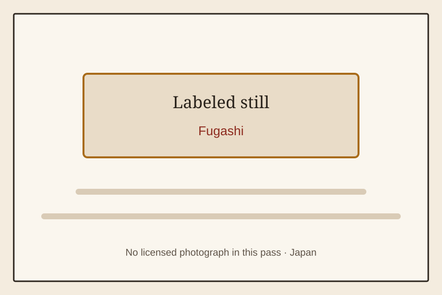

The Old Shelf / Japan / Fugashi
Fugashi
Japanstills only
A labeled still for Fugashi. No licensed photograph was available in this pass.

A labeled still for Fugashi. No licensed photograph was available in this pass.
More from Japan
RandoseruKyushoku lunch trayKyushoku lunch bagJan-ken leftover milk cartonRinsed milk cartonsUwabaki indoor shoesUndōkai hachimakiOnigiriUndōkai human pyramidDagashiyaUmaibōRamune candyKinako-ameSour plum candySquid stick snackCastella stickSuper Cola gum300-yen candy pileEraser clayBroom and dustpanGoldfish scoopKakigōriBon odori festival scenePaper menkoBeigomaRamune bottleKendamaTin nagegomaPaper menkoDagashi jars